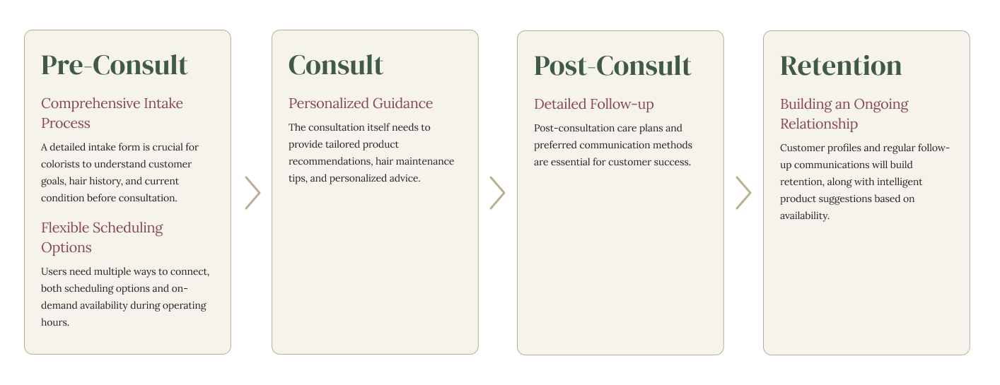
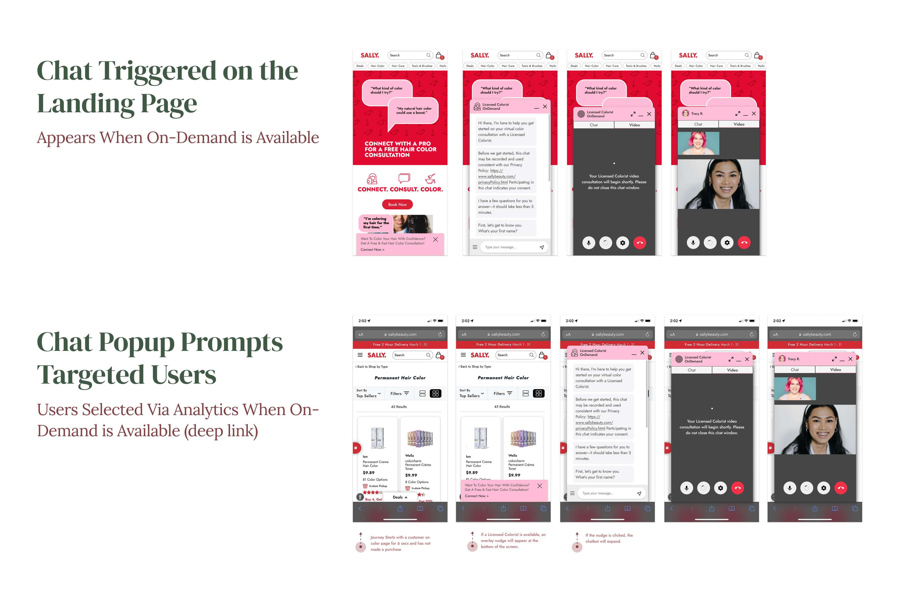

Licensed Colorist on Demand
Sally Beauty's Licensed Colorist on Demand revolutionized how customers approach at-home hair coloring by providing free, live professional consultations through video calls and chat. I designed the end-to-end digital experience that connected Sally's online customers with licensed colorists for personalized advice and product recommendations.

PROJECT INFO
- Company: Sally Beauty
- Year: 2022-2023
- Platforms: Web (Desktop & Mobile)
MY ROLE
- Conceptualization
- Ideation
- Planning & Research
- UI/UX Design
- Prototyping
- User Testing
CROSS-FUNCTIONAL COLLABORATION
- UX Research
- Customer Relations
- Back-End Development
- Marketing
- Ecommerce
- Analytics
- Personalization
METHODS & TOOLS
- Figma
- Voice of the Customer
- Salesforce
- Talkativ
- Iterative Development
- Journey Mapping
- User Surveys & Interviews
At a Glance:
I designed the complete end-to-end digital consultation experience that brought professional hair color guidance to Sally Beauty customers online. Despite significant mid-project technical constraints, I pivoted to a streamlined chat-based solution that successfully launched and gave us a solid foundation to build improvements on.
The result? The service achieved high user satisfaction and loyalty, with continuous colorist roster expansion to meet growing demand. Post-launch iterations based on user feedback introduced flexible communication options that improved accessibility. The service became a cornerstone of Sally's digital strategy that differentiated them from competitors, enjoying sustained growth and high customer retention.
View the Live ExperienceJUMP TO A SECTION:
Challenges | Discovery & Research | The Design Process | Iterative Improvements | Results & Impact | Lessons Learned
Challenges
The in-store experience for LCOD
Sally's Core Business Problem: How to Stand Out
After a major rebrand in 2020, Sally Beauty focused their marketing efforts around "do-it-yourself" hair color. They are the only retailer that sells professional grade hair color used by cosmetologists to the public, which is very different from the typical hair color in a box most people are familiar with. As a result, it could be a struggle to convert potential customers with less experience who often felt too intimidated to try their products. They needed a way to bridge the knowledge gap between professional expertise and at-home application.
An In-Store Experiment Becomes an Opportunity
The first iteration of Licensed Colorist on Demand (LCOD) was soft launched in 50 stores as an exclusively in-person experience facilitated by employees who would connect interested customers to a colorist using a tablet. When this initiative proved successful, leadership became interested in making the experience available to online customers as well.
Sally had never attempted anything this ambitious. The concept was somewhat experimental; there was nothing else in the beauty retail space quite like it. Unlike competitors who offered in-store consultations for a fee with limited availability, Sally would be offering a personalized, high-quality service accessible to anyone, anywhere for free. This was an excellent opportunity to differentiate themselves in the world of hair color and provide a unique value proposition to their customers.
Going From Local to Nationwide
The primary challenge would be scaling this promising test concept into a robust digital platform. There was little to no existing digital infrastructure for some of the more ambitious features; I knew going in that I'd be working around shifting technical requirements and potential budget constraints.
Discovery & Research
Insights from the In-Store Experience
At the beginning of the project, Sally had a dedicated UX research team conducting research on the initial in-store LCOD concept. Building off their foundation I gathered insights from interviews and competitor research. A lot of the takeaways were incredibly promising:
LCOD vs. Online Hair Color Competitors
- Sally's LCOD initiative was compared to services offered by its closest online competitors, Aveda and Madison Reed.
- Customers of all 3 services rated LCOD at parity to or more favorably than the competition.
- LCOD differentiated itself with highly personalized advice and being offered a flexible variety of affordable product recommendations (compared to the limited selection offered by competitors).
The Customers' Experience
- Successfully engaged DIY customers with a high consult-to-purchase conversion rate of 90%.
- Users considered the colorists they interacted with to be professional, engaged, and focused on their needs.
- They noted how colorists could provide vital information not available on the website or product instructions.
- The importance of tailoring consultations to the customer was validated in interviews. Hair can be a sensitive topic for many people, so customers appreciated feeling understood and supported.
The Colorists' Experience
- The licensed colorists were enthusiastic about the program, taking satisfaction in connecting with people and sharing their expertise to help customers get the best possible results.
- Several noted that the biggest issue they ran into was customers not giving an accurate history of their hair, likely due to not knowing what information was relevant to share.
- It would be helpful to adopt a comprehensive intake before the video call begins. This would help enhance personalization, free up more time to focus on the consultation, and improve the overall experience.
Empathy maps for the customer and colorist
"I would love to see the Sally [LCOD] service online. I will likely use and recommend it to others."
- Sally Customer
Building a Digital Strategy
When test users were asked how they felt about the LCOD service being available digitally, the response was overwhelmingly positive. Now I would take the research team's reccommendations and begin to strategize how a digital experience would operate.
The Design Process
Initial Vision: The Optimal Experience
Taking visual design direction from branding provided by the marketing team, I designed a comprehensive booking system where customers could:
Choose Consultation Type
Choose between scheduled consultations from a dedicated landing page or start one on-demand through a chatbot window.
Complete Intake Questionnaire
Complete an intake questionnaire to provide the colorist with the client's information they need up front.
Receive Confirmation
For pre-scheduled consultations, clients receive confirmation that the appointment is scheduled and follow-up reminder communications.
Join the Video Call
Client either receives an email with a personalized link connecting them live with their colorist, or begins the call directly on chat.
Receive Follow-up Communications
Client receives follow-up emails to reiterate the instructions given by their colorist with personalized product recommendations.
In addition to the above, a chat popup would intelligently target specific customer groups browsing pages relevant to hair color. The chatbot would handle the intake questions and then either connect the user to an on-demand video consultation or forward them to the scheduling system. It would not appear if the service was unavailable.
Once the consultation was complete, the user is forwarded to a post-consultation page with follow-up information. Retention emails are sent immediately after, 4 days after, and 30 days after.
Pivot Point: Adapting to Reality
Mid-development, I learned quickly that this project required me to be very flexible. While executives had ambitious goals, several dependencies had not yet been finalized when the UX team was handed the initiative. This forced me to regroup and re-strategize on more than one occasion:
Spanish-Language Journey Added Late
I was asked to add a user journey for Spanish language customers (despite this not being included in the original requirements). Project managers ultimately decided that it was not feasible to keep enough bilingual licensed colorists on standby for the initial launchand it was removed.
Account Integration Not Feasible
A proper technical assessment of the high-level architecture was not conducted, so I was essentially doing exploration and design simultaneously. I had finished a deep dive into mapping out flows for guest users and users logged into their Sally Beauty account, but it was determined that integration of the LCOD system with user accounts was too heavy of a technical lift for the back end.
Scheduling System Unavailable
Due to stakeholders being unable to acquire the necessary software, I was told we could not incorporate an appointment scheduling system at all. This news came pretty late in the development timeline and pushed back the original launch date.
That last one was, unfortunately, a huge blow to the quality of the UX. Not being able to pre-schedule a color consultation meant that we would have to move forward with a "first come, first serve" queue system as the minimum viable product. This of course came with its own unique challenges: How would we handle wait times? During high traffic hours there would inevitably have to be a cutoff point for the queue, so how do we communicate unavailability and avoid frustrating users as much as possible?
While this was not an optimal experience, I would do my best to work around these limitations while keeping the core value proposition intact.
Launching a Minimum Viable Product
The goal now was to quickly get a working product live. After the launch we would focus on gathering real-world user feedback and iterative improvement.
I streamlined the new on-demand only experience so that it took place entirely within the UI of the chat window. The user could complete their intake form in the chat then get connected to their video call without having to leave. Like the previous version, it could be accessed from the designated LCOD landing page or when a user is targeted as part of a specific customer group. Customer wait time was limited to no more than 5 minutes. If the queue passed this threshold, the session would end and the user would be told to try again later.
The post-consultation follow-up journey remained the same as the initial design.
Iterative Improvements
Post-Launch Learning
"Concept sounds great but I've tried 3 times and was never able to speak with anyone"
- LCOD Customer
Due to complaints about technical issues with video calls and colorists reporting that many customers would end their consultation once they realized they'd have to be on video, a text-only consultation option was introduced.
While the ability to communicate through text in the chat window experience had always been available, that was only as a backup for when audio clarity was an issue. Users were still required to be on video. This was considered the optimal experience for the colorist because, in order to provide the best service possible, it was helpful to be able to see the customer's hair. However, it was becoming apparent that there was a need for more flexibility.
Interviews with the colorists and user feedback surveys revealed the following critical insights:
A major frustration was the lack of available colorists.
Demand often exceeded the capacity to accommodate. Customer satisfaction took a notable decline once wait times passed the 3 minute mark.
Text chat was overwhelmingly the preferred choice among users.
However, it comes with the downside of taking up significantly more time (30-40 minutes vs. 15 minutes for video calls) due to the delay in typing out responses.
The Solution: Better Communication & Accommodating User Preferences
In order to mitigate the bottleneck issue caused by the popularity of text chat, we started by revising our communication strategy to encourage more users to try video instead. Messaging was added to explain why video is the preferred option. We emphasized the authenticity of speaking with a professional face to face, reassured users that this was a no-judgement zone where they don't have to worry about their appearance, and pointed out that it only takes 15 minutes of their time. Stakeholders would explore technical solutions for improving video quality and connection problems.
Many of these changes were made in conjunction with the marketing team as they updated the overall branding of the LCOD program.
View Full Experience in FigmaThe UX and marketing teams collaborated to optimize copy that encouraged video consultations while reassuring hesitant users.
Additionally, it was vital to increase the speed of chat-only interactions. Options to help the licensed colorists communicate faster included text-to-speech integration and pre-written "canned" messages to copy and paste as needed. The most significant improvement was adding the ability to upload image files to the text chat. Users who declined to be on video were now required to show the colorist their hair via photo, which increased the value of the consultation and helped it progress faster.
The ability to upload image files to the text chat increased the value of the consultation and helped it progress faster.
Results & Impact
Measurable Success Indicators
Program Expansion and Sustainability
Sally Beauty continues to gradually expand their roster of licensed colorists to meet growing demand. The program remains active and popular well beyond the initial launch period.
Feature Adoption Patterns
Text chat became the overwhelmingly preferred consultation method among users, validating an iterative approach to user preferences over our initial assumptions.
Operational Efficiency Improvements
The implementation of clear wait time communication, availability messaging, and queue management reduced customer service complaints related to LCOD.
Cross-Departmental Ownership
Eventually, marketing and customer relations teams resumed full ownership of the project, consulting UX only for minor improvements. This transition indicated that the product had reached a stable, successful state that could be maintained by business teams.
LCOD performance metrics based on survey data collected through Voice of the Customer.
As Licensed Colorist OnDemand continues over time, customer experience has improved and remains at a very high level of customers being "Highly Satisfied" with various aspects of the experience. Sally customers participating in LCOD consistently have a higher Net Promoter Score than those who do not participate.
Evidence of Impact
"I loved that the colorist that helped me was so friendly and accommodating. She stayed with me for a while and was very patient to answer all of my questions. She demonstrated a lot of knowledge with the colors and I would definitely come back!"
- LCOD Customer
"10/10 experience! I'm a busy mom who never has time to go to the salon. I've been shooting in the dark for years just blindly coloring my hair. I got so much information in that consultation. Thankful for this service."
- LCOD Customer
-
Customer Loyalty and Repeat Engagement
Despite initial technical challenges and wait times, users demonstrated genuine faith in the LCOD concept and showed strong inclination to engage with the service on multiple occasions. Once customers successfully connected with a colorist, they consistently appreciated the value and converted into loyal, repeat users.
-
Successful Conversion of Hesitant Customers
The service effectively addressed its primary goal of converting reluctant customers into confident DIY colorists. Users who had previously been intimidated by professional-grade products reported feeling empowered to attempt techniques they wouldn't have tried on their own.
-
Competitive Differentiation Achieved
Sally Beauty successfully positioned itself as the only major beauty retailer offering free, on-demand professional consultations, creating a unique value proposition that competitors couldn't match. This differentiation was particularly valuable in converting customers from online-only personalized hair color businesses with limited product ranges.
-
Stakeholder Confidence and Strategic Integration
The program became integrated into Sally Beauty's core digital strategy, with branding refreshed and updated over time while maintaining the service's popularity. Internal stakeholders' willingness to continue investing in improvements and expansion demonstrated confidence in the program's long-term value.
-
User Behavior Validation
The overwhelming preference for text chat over video, despite longer consultation times (30-40 minutes vs. 15 minutes), revealed important insights about user comfort levels and service accessibility. This behavioral data validated the importance of offering flexible communication options rather than forcing users into a single "optimal" experience.
Lessons Learned
Successfully launching LCOD required navigating complex interdependencies while maintaining design quality under shifting requirements. I learned to work more effectively with engineering teams to understand not just what was technically possible, but what was feasible within our timeline and budget constraints. Collaborating with business stakeholders meant balancing ambitious goals with realistic expectations, often having to advocate for user needs when they conflicted with business convenience. This project taught me that great UX design happens at the intersection of user needs, business goals, and technical reality. Collaboration is essential for finding solutions that satisfy all three.
If I could continue this project...
If I were to continue developing Licensed Colorist On Demand, here's what I would focus on:
- Predictive availability: Use data to better forecast and communicate wait times
- Personalization: Leverage consultation history for more targeted product recommendations
- Educational content: Create follow-up resources to reinforce colorist guidance